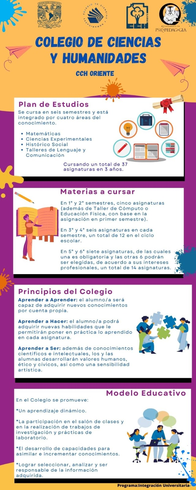
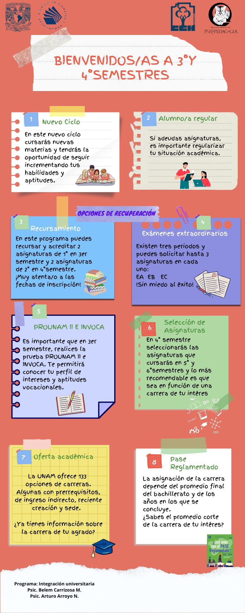

INFORMACIÓN IMPORTANTE SOBRE TU SEMESTRE EN CURSO



Primer Semestre
No dejes pasar más tiempo. Si te rezagas mucho, podrías reprobar alguna asignatura. ¡Que eso no suceda! ¡solicita una asesoría!Si tienes dificultad para concentrarte o para realizar tus tareas cotidianas; si sospechas que tu estado de ánimo no está de lo mejor, solicita atención psicopedagógica.
Pide apoyo a tu maestro tutor o tutora de grupo o escribe a oriente@tutor.cch.unam.mx (Coordinación de Tutorías) si estás teniendo dificultades para aprender o para cumplir con tus asignaturas.
Si te está yendo bien, ¡mira hacia adelante! Hay varias actividades para iniciarse en la investigación, talleres para profundizar en algún tema o disciplina de tu interés, mejorar tus habilidades en idioma extranjero... La UNAM tiene reconocimientos especiales para jóvenes sobresalientes ¡tú puedes destacar!
Asimismo, si acreditas todas tus asignaturas en primero y segundo semestre, se abre la oportunidad de estudiar una especialización técnica (Estudios Técnicos Especializados, en paralelo a tus materias de bachillerato)
A continuación, los temas de consulta más frecuentes que hemos recibido, de compañer@s de nuevo ingreso. Si no encuentras lo que buscas, puedes enviar un mensaje en el blog o a estudiantiles.oriente@cch.unam.mx
- Asesorías (para aclarar dudas sobre temas difíciles de alguna asignatura). Cómo solicitar
- Atención Psicopedagógica
- Beca Benito Juárez
- Becas de conectividad (módem, tablet)
- Becas DGOAE UNAM para grupos vulnerables, deportistas de equipos representativos y otras.
- Constancia de estudios. Dónde solicitarla/requisitos.
- Corrección o actualización de datos personales.
- Credenciales.
- Estudios Técnicos Especializados.
- Historial académico (esto es, tus calificaciones. Únicamente a partir de segundo semestre).
- Justificante de inasistencias por motivos de salud o por obligaciones extraescolares. Dónde solicitar/requisitos.
- Seguro de salud..
Tercer Semestre

Estás por iniciar el tercer semestre en el Colegio...
Es buen momento para revisar tu situación escolar, evaluar tu desempeño durante los primeros semestres, atender las posibles deficiencias que detectes y aprovechar las opciones que te brinda el CCH para mejorar y favorecer tu desarrollo personal. Esperamos que el siguiente ciclo escolar cumplas con tus metas escolares y personales , y ellas te hagan sentir orgulloso de ti misma (o) y de pertenecer a la Máxima Casa de Estudios, tu casa, la UNAM.
Asignaturas a cursar en 3° y 4° semestres.
La formación que recibes desde el primero hasta el cuarto semestre son conocimientos básicos integrados en cuatro áreas: matemáticas, ciencias experimentales, histórico social, y talleres de lenguaje de comunicación.
| 3° semestre | 4° semestre |
|---|---|
| Matemáticas, Álgebra y Geometría Analítica III | Matemáticas, Álgebra y Geometría Analítica IV |
| Física I | Física II |
| Biología I | Biología II |
| Historia de México I | Historia de México II |
| Taller de Lectura, Redacción e Iniciación a la Investigación Documental III | Taller de Lectura, Redacción e Iniciación a la Investigación Documental IV |
| Lengua Extranjera III | Lengua Extranjera IV |
Pronto elegirás carrera y en 4° semestre seleccionarás las asignaturas relacionadas con ella, por lo que será necesario...
- Iniciar una investigación de las carreras que ofrece la UNAM, ahora son 136
- Conocer el perfil de ingreso, demanda, promedio, sedes, sistema.
- Investigar los contenidos de las asignaturas (5° y 6°) que te brinden conocimiento básico para la carrera.
Elementos necesarios para la selección de asignaturas.
- Saber qué carrera orientará esta selección.
- Conocer los esquemas preferenciales. Son una guía que indica 3 asignaturas básicas para la carrera.
- Conocer las reglas de selección.
Consulta la Guía de Carreras de la UNAM,
Conoce los programas de asignaturas de 5° y 6° semestres
Acude a Psicopedagogía y visita la páginas:
3ER Y 4O SEMESTRES
SELECCIÓN DE ASIGNATURAS
CARRERAS CON PRERREQUISITOS
- Licenciaturas que se imparten en la modalidad a Distancia del Sistema Universidad Abierta y Educación a Distancia (SUAyED) Para ingresar a una Licenciatura que se imparte en la modalidad a Distancia del SUAyED, es importante considerar que es obligatorio cursar de manera íntegra y aprobar satisfactoriamente el Programa de Apoyo al Ingreso (PAI)
- Licenciaturas de la Facultad de Música: Canto, Composición, Educación Musical, Instrumentista y Piano. Acreditar, sin excepción, el dominio de los conocimientos y las habilidades de los tres años de formación del propedéutico correspondiente a la carrera de tu elección. Consulta: http://www.fam.unam.mx/
- Música y Tecnología Artística. Debes acreditar los conocimientos y las habilidades musicales del perfil de ingreso. Consulta: www.enesmorelia.unam.mx
- Teatro y Actuación. Aprobar un proceso de selección interno, cursar y acreditar el curso propedéutico donde se evalúan las habilidades artísticas de las y los aspirantes. Consulta: www.cut.unam.mx
- Enseñanza de Inglés. Examen de Suficiente Dominio del Inglés: ESDI
- Enseñanza de (Alemán), (Español), (Francés), (Inglés), (Italiano) como lengua extranjera. (Examen de Dominio del Idioma EXDI)
- Lengua y Literaturas Modernas (Alemanas, Francesas, Inglesas, Italianas o Portuguesas) Examen de suficiente dominio de la lengua elegida. http://modernas.filos.unam.mx/ingreso
- Lingüística Aplicada. Examen de Dominio Intermedio (EDI-Lingüística) equivalente al nivel B1+, en la lengua objeto de estudio seleccionada (alemán, francés o inglés) y entrevista.
- Traducción. Examen de Dominio Intermedio de inglés (EDI-Traducción), equivalente al nivel B1+
IMPORTANTE:
Garantiza la Asignación de carrera con:
Promedio de 9 y 3 años de bachillerato
Carreras de reciente creación
- Matemáticas para el Desarrollo
- Ingeniería Aeroespacial
- Turismo y Desarrollo Sostenible
- Ciencias Agroforestales
- Ciencias de la Nutrición Humana
Recuperación escolar.
Si reprobaste alguna asignatura, cuentas con las siguientes opciones de recuperación:
Recursamiento
- Puedes volver a cursar en forma regular 2 materias de 1° o 3°, mientras cursas 5°.
- Y cursar 2 materias de 2° o 4° durante 6° semestre.
- Consulta el calendario de inscripciones.
Examen extraordinario
- Existen 3 períodos durante el ciclo escolar. En cada uno podrás solicitar hasta 3 exámenes.
- Acude también al PIA (Programa Institucional de Asesorías) para resolver tus guías de estudio.
Otras opciones
Recursamiento inmediato o en línea. Mantente atento a las convocatorias.
Para ser alumno regular
Te sugerimos:
- No adeudar materias, o recuperarlas cuanto antes a través de alguna de las opciones de acreditación ordinaria o extraordinaria.
- Asistir a clases y cumplir con todas tus actividades.
- Participar en clase, entregar trabajos a tiempo, programar tus actividades y repaso de temas.
- Acudir a asesorías PIA, para despejar dudas.
- Esforzarte para mejorar tu promedio.
Esto te permitirá concluir en 3 años y ejercer tu Pase Reglamentado sin complicaciones.
Otras actividades
Además, a partir de ese semestre, tienes la posibilidad de participar en actividades extracurriculares para seguir favoreciendo tu desarrollo integral.
¡Descubre y aprovecha alternativas!
Educación Física, Mediateca, SILADIN, Estudios Técnicos Especializados, Difusión Cultural, Club de Robótica, Educación Ambiental, Idiomas, Jóvenes hacia la Investigación, Talleres de Psicopedagogía, Tutorías, Asesorías, entre muchas otras.
Quinto Semestre
Si cursas 5o semestre y adeudas alguna asignatura, esta información es para ti.